22 July 1940
The SOE is officially formed by Winston Churchill’s order – “Set Europe Ablaze!”
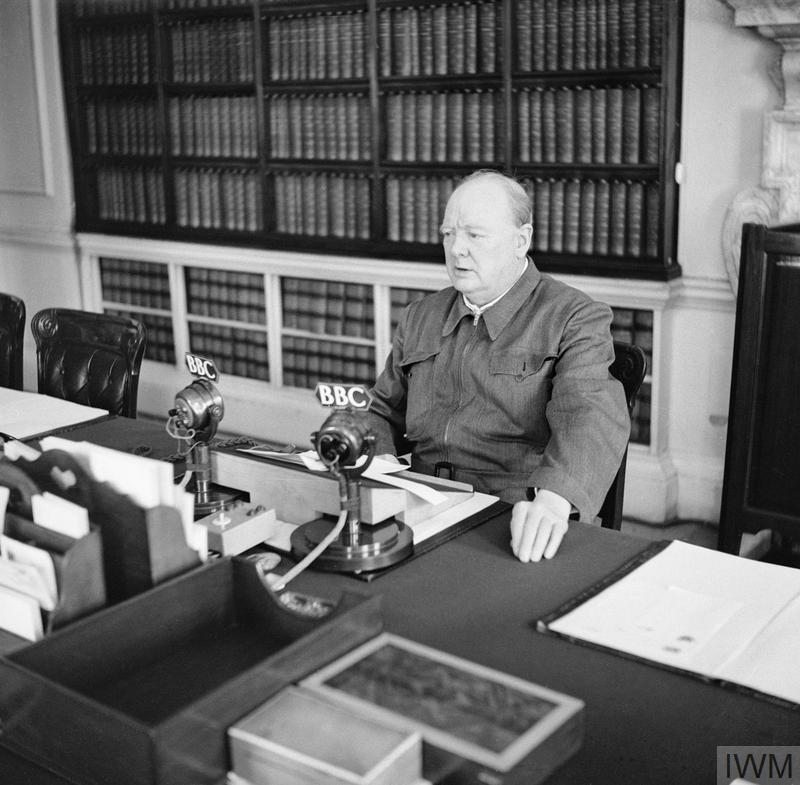.png)
The SOE is officially formed by Winston Churchill’s order – “Set Europe Ablaze!”
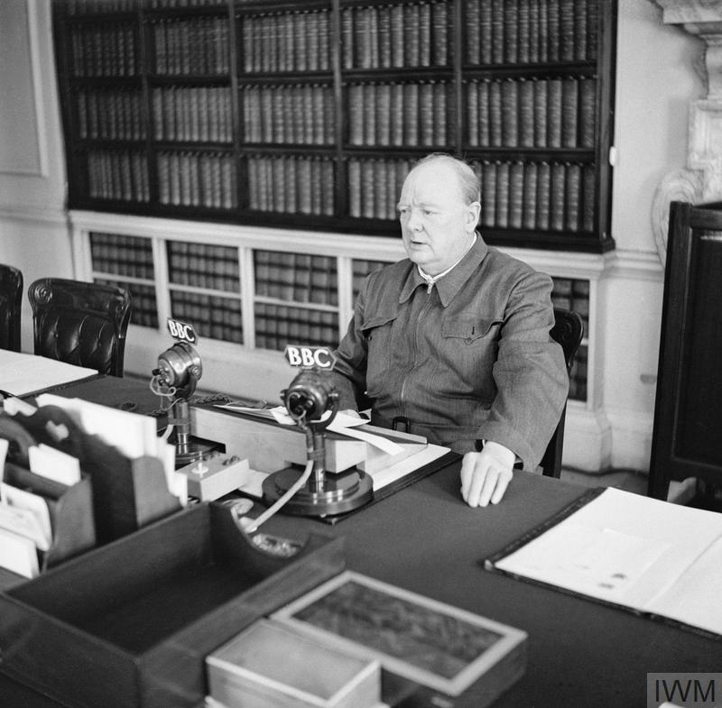SOE set up the first headquarters in a flat off Baker Street. After this, they also started to recruit men and women to fill their ranks. Those who were apart of this clandestine organisation were labelled as the “Baker Street irregulars.”
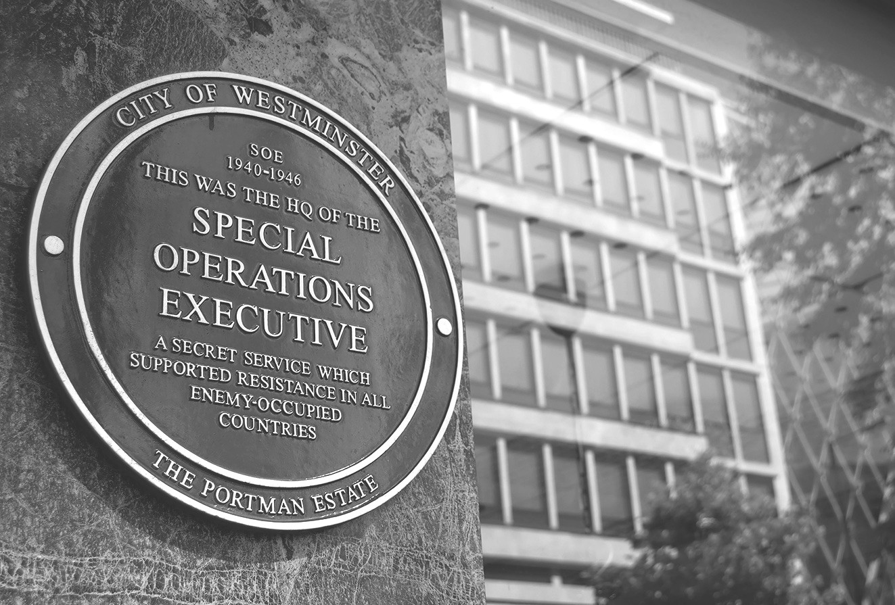Colonel Colin Gubbins began to create training bases across several properties across the country, where agents were taught to kill, disguise, derail a train and more.
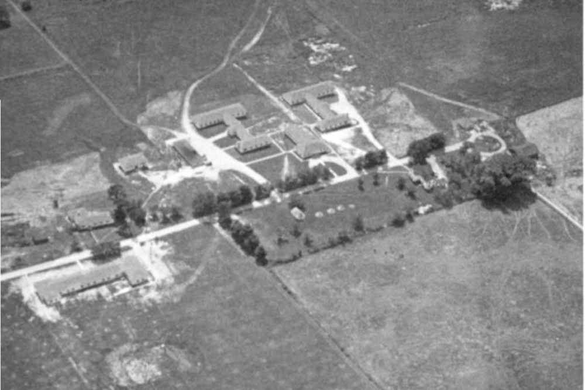First agents sent into France via Lysander aircraft and parachutes.
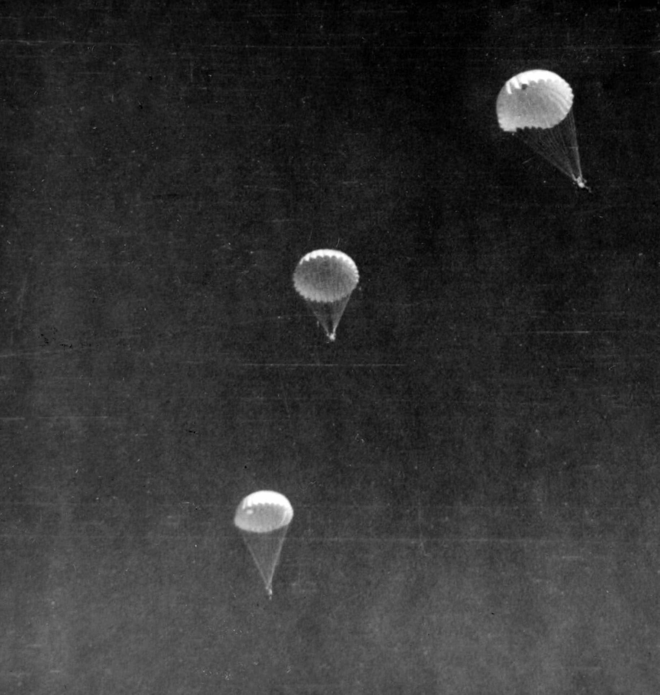Force 136 was created for Far East operations.
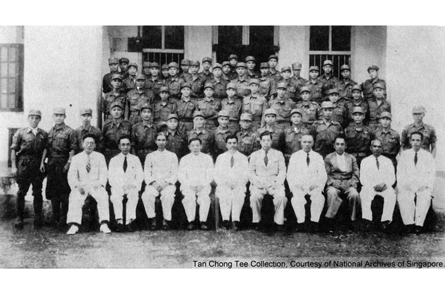SOE first headline success came in June 1941, where agents blew up a Pessac power station with a few explosive charges- this put the organisation on the map and led to hundreds more in Europe and in the far East.
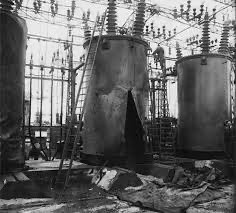SOE begins operations in Burma, Greece, and Yugoslavia. Force 133 formed for Balkans.
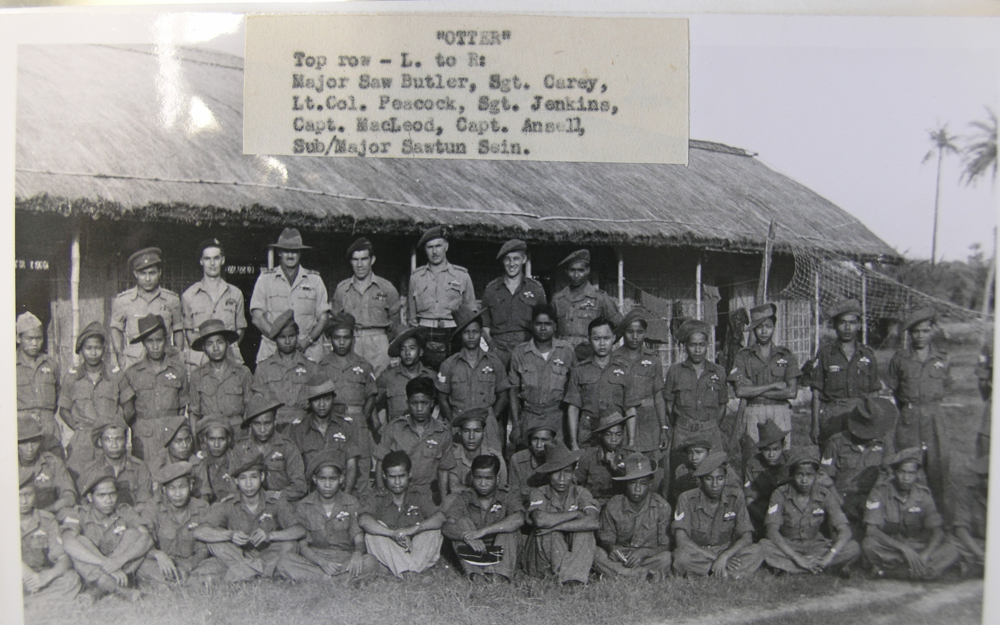Noor Inayat Khan joins SOE and begins wireless training.
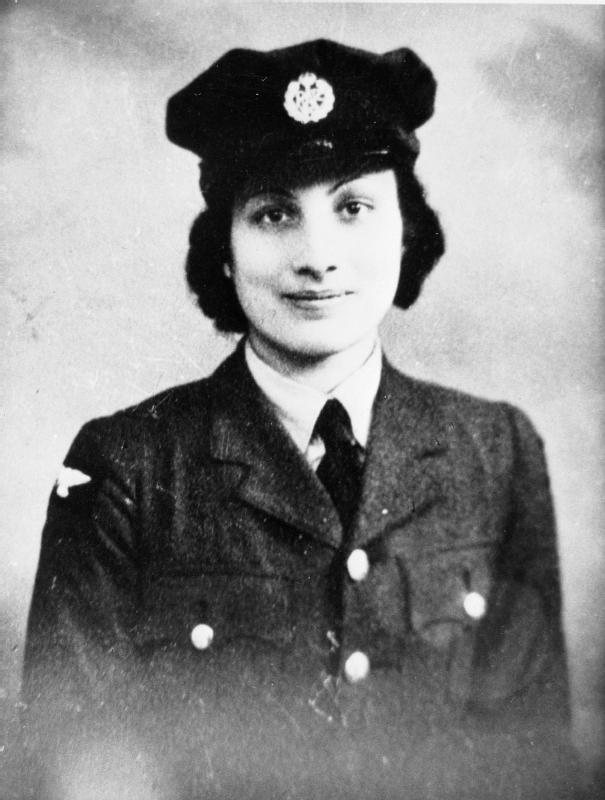SOE agents and local Greek resistance destroy the Gorgopotamos viaduct in Operation Harling — a major railway sabotage.
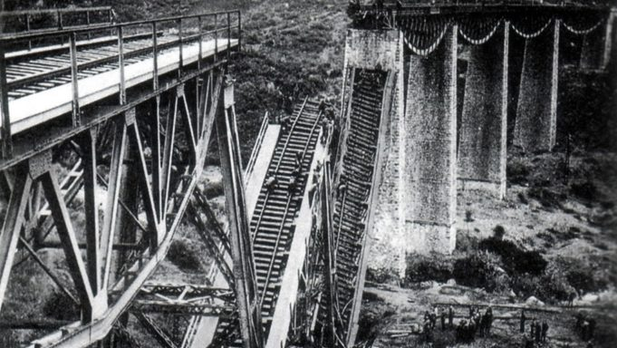A special wireless set weighing less than 40 lbs was developed which was one of the most important tools for radio communication during this time.
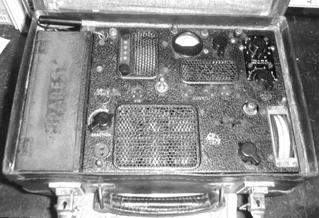a major campaign of ww2 where the Allies took Sicily from the axis (Italy and Germany). The Mediterranean Sea lanes were opened and the Italian dictator Benito Mussolini was toppled from power.
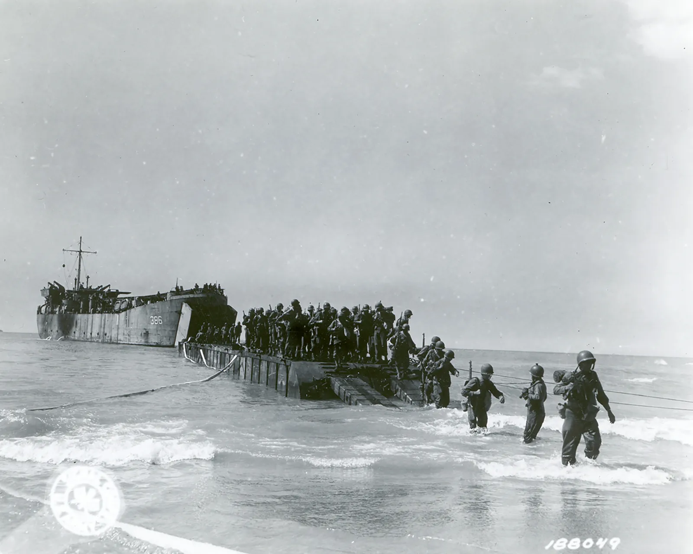D-Day, where the SOE had become a feared organisation as they no stretched across occupied Europe and coordinated resistance sabotages German transport, railways, and communication systems in France.

There was a plan to assassinate Adolf Hitler but no attempt was made, but historians believed that the operations would have been made in July.
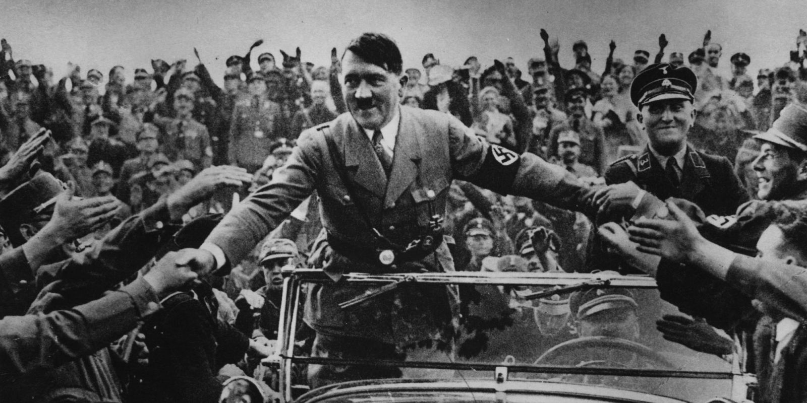Victory in Europe (VE) Day- operations in Europe cease.
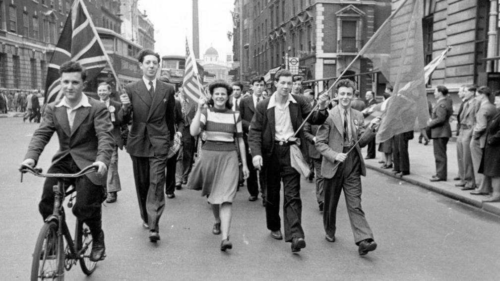Victory over Japan (VJ) Day- final SOE missions end in Southeast Asia.

SOE is officially dissolved and absorbed into MI6 and other intelligence services.
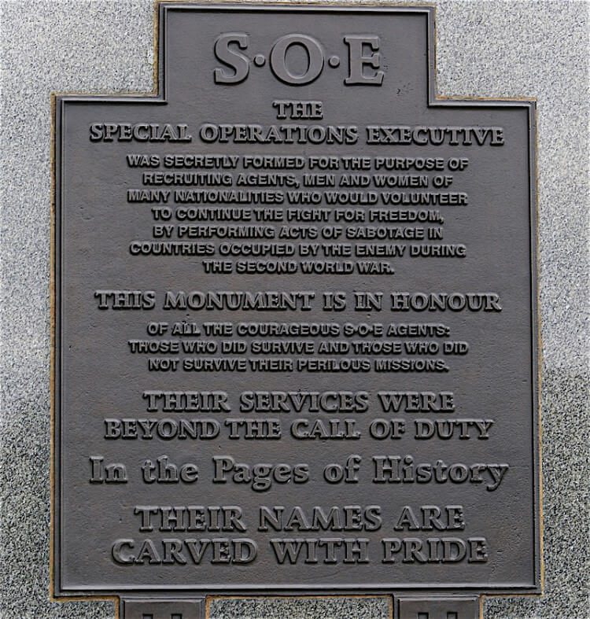